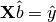
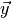
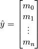
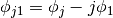
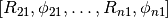
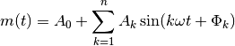
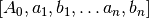

plotypus.preprocessing module¶
Light curve space transformation preprocessors for regressing upon.
-
class
plotypus.preprocessing.Fourier(degree=3, degree_range=None, regressor=LinearRegression(copy_X=True, fit_intercept=False, n_jobs=1, normalize=False))[source]¶ Bases:
objectTransforms observed data from phase-space to Fourier-space.
In order to represent a light curve as a Fourier series of the form

phased time observations are transformed into a design matrix
 by
by Fourier.design_matrix(), such that linear regression can be used to solve for coefficients
in the matrix equation

where  is the vector of observed magnitudes

If degree_range is not None, degree is selected via
baart_criteria(). Otherwise the provided degree is used.Parameters
- degree : positive int, optional
- Degree of Fourier series to use, assuming degree_range is None (default 3).
- degree_range : 2-tuple or None, optional
- Range of allowed degrees to search via
baart_criteria(), or None if single provided degree is to be used (default None). - regressor : object with “fit” and “transform” methods, optional
- Regression object used for fitting light curve when selecting degree
via
baart_criteria(). Not used otherwise (defaultsklearn.linear_model.LinearRegression(fit_intercept=False)).
-
baart_criteria(X, y)[source]¶ Returns the optimal Fourier series degree as determined by Baart’s Criteria [JOP].
Citations
[JOP] J. O. Petersen, 1986, “Studies of Cepheid type variability. IV. The uncertainties of Fourier decomposition parameters.”, A&A, Vol. 170, p. 59-69
-
static
baart_tolerance(X)[source]¶ Returns the autocorrelation cutoff of X for
baart_criteria(), as given by
Parameters
- X : array-like, shape = [n_samples, 1]
- Column vector of phases
Returns
-
static
design_matrix(phases, degree)[source]¶ Constructs an
 matrix of the form:
matrix of the form:
where
 degree,
degree,  n_samples, and
n_samples, and
 phases[i].
phases[i].phases : array-like, shape = [n_samples]
-
fit(X, y=None)[source]¶ Sets self.degree according to
baart_criteria()if degree_range is not None, otherwise does nothing.Parameters
- X : array-like, shape = [n_samples, 1]
- Column vector of phases.
- y : array-like or None, shape = [n_samples], optional
- Row vector of magnitudes (default None).
Returns
self : returns an instance of self
-
static
fourier_ratios(phase_shifted_coeffs)[source]¶ Returns the
 and
and  values for the given
phase-shifted coefficients.
values for the given
phase-shifted coefficients.

Parameters
- phase_shifted_coeffs : array-like, shape = [
- Fourier sine or cosine series coefficients.
![[ A_0, A_1, \Phi_1, \ldots, A_n, \Phi_n ]](../_images/math/0d525c565a388826ead09f536c931646a56b3bb5.png) .
.
 ]
]Returns
- out : array-like, shape = [
- Fourier ratios .
]
-
get_params(deep=False)[source]¶ Get parameters for this preprocessor.
Parameters
- deep : boolean, optional
- Only here for scikit-learn compliance. Ignore it (default False).
Returns
- params : dict
- Mapping of parameter name to value.
-
static
phase_shifted_coefficients(amplitude_coefficients, form='cos', shift=0.0)[source]¶ Converts Fourier coefficients from the amplitude form to the phase-shifted form, as either a sine or cosine series.
Amplitude form:

Sine form:

Cosine form:
Parameters
- amplitude_coefficients : array-like, shape = [
- Array of coefficients .
- form : str, optional
- Form of output coefficients, must be one of ‘sin’ or ‘cos’ (default ‘cos’).
- shift : number, optional
- Shift to apply to light curve (default 0.0).
]Returns
- out : array-like, shape = [
- Array of coefficients
.
]
-
set_params(**params)[source]¶ Set parameters for this preprocessor.
Returns
self : returns an instance of self
-
transform(X, y=None, **params)[source]¶ Transforms X from phase-space to Fourier-space, returning the design matrix produced by
Fourier.design_matrix()for input to a regressor.Parameters
- X : array-like, shape = [n_samples, 1]
- Column vector of phases.
- y : None, optional
- Unused argument for conformity (default None).
Returns
- design_matrix : array-like, shape = [n_samples, 2*degree+1]
- Fourier design matrix produced by
Fourier.design_matrix().